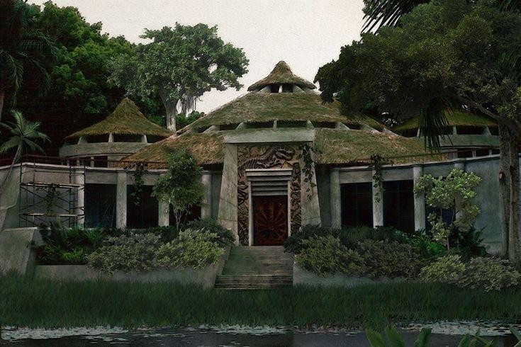
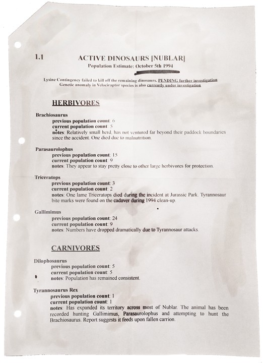
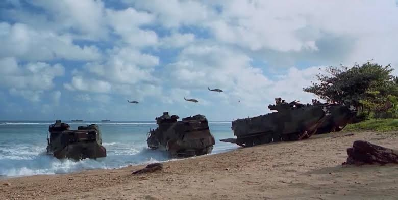

01 REGISTRO DE INCIDENTES
Haz clic en cada expediente para ver la información detallada
El Incidente de 1993 (Isla Nublar)
CRÍTICO
Resumen del Expediente
El 11 de junio de 1993, el parque temático Jurassic Park en Isla Nublar sufrió un fallo catastrófico de seguridad provocado por el sabotaje del programador Dennis Nedry. Nedry deshabilitó las redes de seguridad para robar embriones a cambio de dinero, lo que permitió que los dinosaurios, incluyendo al Tyrannosaurus rex y a los Velocirraptores, escaparan de sus recintos.
Esto resultó en múltiples muertes y la pérdida total de la isla. InGen silenció a los sobrevivientes con compensaciones económicas y amenazas legales, y el gobierno de Costa Rica tuvo que intervenir para evitar que Estados Unidos bombardeara la isla.
InGen falsificó los informes de incidente. Los registros originales fueron destruidos en la sede de San José, Costa Rica. Esta información proviene de fuentes internas con riesgo vital para las mismas.
Operación Limpieza (1994)
ENCUBIERTA
Informe de Campo
Para mitigar las enormes pérdidas financieras y asegurar sus activos tras el desastre del 93, la junta directiva de InGen aprobó la primera Operación Limpieza. Sus objetivos fueron recuperar muestras de ADN de la mayoría de las especies de Isla Nublar, realizar un conteo de los sobrevivientes y trasladar a un número considerable de estos dinosaurios hacia la Isla Sorna (el sitio de cría B).
Sin embargo, durante el traslado, varios contenedores fueron desviados en secreto hacia paraderos desconocidos.
Se recuperaron fragmentos de los registros operativos. Se incluyen en el siguiente archivo de evidencia clasificada:
📂 ACCEDER A EVIDENCIAS — OPERACIÓN LIMPIEZA 1994Operación Limpieza (1996)
ENCUBIERTA
Informe de Campo
Bajo la dirección del ejecutivo Scrap Davis, InGen lanzó una segunda Operación Limpieza, esta vez en la Isla Sorna, que había sido devastada por el Huracán Clarisa en 1994. El objetivo era recuperar documentos técnicos, reportes de comportamiento y reactivar la energía para obtener datos satelitales que permitieran extraer dinosaurios para el nuevo proyecto "Jurassic Park San Diego".
El equipo enviado (que incluía a los doctores Albert Levine, Kate Vanegas y Boris Dai Wong) sufrió un ataque por parte de los dinosaurios sueltos y no pudo ser rescatado, pero lograron reactivar los sistemas para que InGen obtuviera la información semanas después.
Archivos de la Operación Limpieza en Sorna recuperados de servidores de respaldo:
📂 ACCEDER A EVIDENCIAS — OPERACIÓN LIMPIEZA 1996Proyecto Re-Génesis
EXPUESTO
Análisis del Programa
Iniciado originalmente en 1994 como una iniciativa secundaria, el Proyecto Re-Génesis buscaba ir más allá de la clonación, utilizando manipulación genética avanzada para crear híbridos y mejorar las características (tamaño, fuerza, inteligencia) de las especies con posibles aplicaciones armamentísticas o militares.
Tras la compra de InGen por Masrani Global en 1998, el Dr. Michael King aprovechó un vacío legal para reactivar el proyecto en las sombras, creando variantes letales. En 1999, el gobierno de Estados Unidos descubrió que el proyecto violaba la Ley de Guardia Genética y ordenó su clausura inmediata y la destrucción de los especímenes alterados.
A pesar del cierre oficial, la operación continuó en las sombras. Los registros legales públicos son solo la punta del iceberg. InGen nunca fue realmente detenida.
Incidente de 2001 (Isla Sorna)
CRÍTICO
Resumen del Expediente
En el año 2001, un grupo de personas realizó una incursión ilegal en Isla Sorna para rescatar a un joven extraviado, secuestrando bajo engaños al Dr. Alan Grant para que les sirviera de guía. Las alteraciones que provocaron en el ecosistema causaron la liberación accidental de Pteranodones, los cuales escaparon de la isla y llegaron hasta Oklahoma.
InGen envió a Vic Hoskins, su jefe de operaciones militares, para cazar y contener a las aves. Tras este escándalo, Masrani Global firmó un nuevo contrato clasificado con Costa Rica para gestionar las islas Nublar, Sorna y Matanceros.
Los supervivientes describieron un ecosistema activo y plenamente funcional, incluyendo crías de al menos cuatro especies. Esto es imposible si las operaciones de InGen hubieran cesado realmente en 2000.
Lo que pasó en la Isla Matanceros (2002)
CLASIFICADAACCESO DENEGADO
Proyecto Nueva Era
Aunque públicamente Matanceros fue designada como una isla de soporte logístico, en secreto albergaba el "Proyecto Nueva Era", dirigido por el Dr. Michael King y financiado por el ejército estadounidense (General Rogers). En esta isla, se continuó la creación de dinosaurios híbridos militarizados, como Utahraptors adiestrados para obedecer órdenes y abominaciones multigenómicas imparables como el Ultimate Predator X.
La situación en Matanceros culminó en una catástrofe total (narrada en el libro Caos en la Isla) cuando un grupo de sobrevivientes y mercenarios se infiltraron para exponer los crímenes de InGen. El sistema de seguridad colapsó, los dinosaurios híbridos escaparon de sus recintos, masacrando a los soldados de InGen (incluyendo al propio Dr. King) y desatando el caos absoluto en las instalaciones antes de que los sobrevivientes lograran huir en helicóptero.
Los archivos recuperados de la Operación Última se encuentran en el siguiente repositorio de evidencia:
📂 ACCEDER A EVIDENCIAS — OPERACIÓN ÚLTIMA 2002